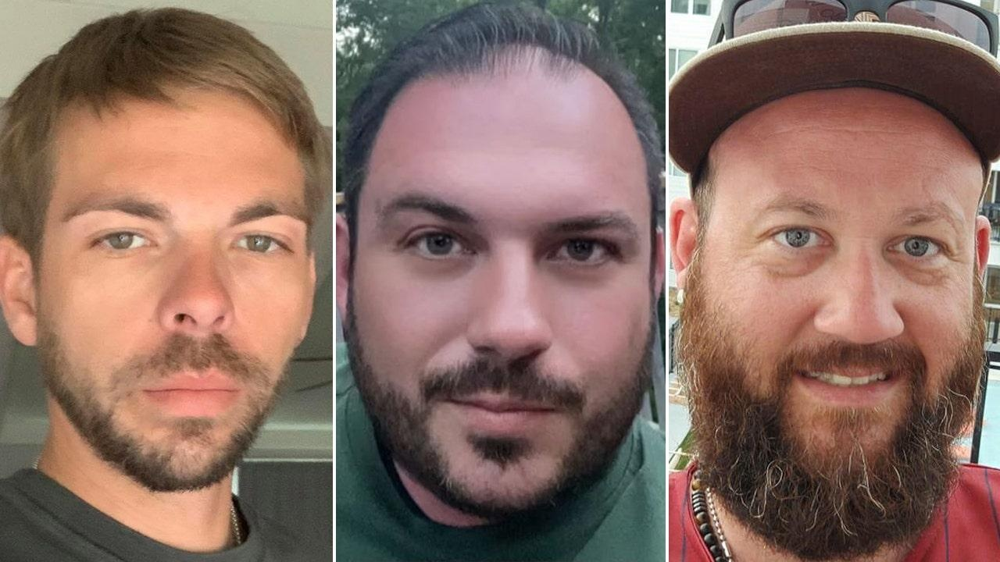

Parents of Kansas City Chiefs fan found dead think victims 'saw something they shouldn't have seen'As the families of three dead Kansas City Chiefs fans await the results of their loved ones' toxicology reports, one victim's father has a "sinister theory" about what may have preceded their mysterious deaths. The bodies of Ricky Johnson, 38; Clayton McGeeney, 36; and David Harrington, 37, were discovered on January 9, two days after they had gathered at their friend Jordan Willis' home to watch the Chiefs play the Los Angeles Chargers. Willis' attorney has said his client had no idea the men were outside, and was only made aware of the bodies when police showed up at the Northwest 83rd Terrace home days later. He said he slept for nearly 48 hours following the party, according to his attorney John Picerno, while family members of the deceased fans tried to contact him and even showed up at his home. Harrington's father, Jon Harrington, told Fox News Digital that he is "not buying" that story and "doesn't believe anything [Willis'] attorney says." "[Harrington's mother] and I are both convinced that Jordan Willis played a part in this somehow," the elder Harrington said on Thursday. "We just haven’t figured out how yet. . . . What else could it be? Perfectly healthy men don’t just drop off the face of the earth." "There were four of you in the house and now three of them are dead and you’re not. That doesn’t add up," the father continued. "I’m thinking that he, the three of them learned something or saw something that they shouldn’t have seen, and he decided ‘well, I need to get rid of you now.’ Friends or not." After speaking with the Platte County prosecutor's office, Harrington's father said he "would expect that they will treat this as a drug overdose and go on with their business." "But I don’t think it’s as simple as that," he said. "I'm aware that they may have done some substances that were questionable – but the idea was to get high, not dead . . . If they were supposed to be friends, why didn’t [Willis] come find them. I’m sure they have a hundred different answers to that, but that’s my question." Jennifer Marquez, Harrington's mother, told Fox News Digital that although her son "smoked cigarettes and drank beers with his friends," she doesn't believe he overdosed, and that "Jordan [is going to] have everything to do with what we find out" about his death. "Yes, I believe that something happened that night and that Jordan had something to do with it," Marquez said. "We all believe that Jordan had something to do with that." "He sat in that house for two days and had time to get rid of and clean up evidence," Marquez said on Thursday. "He's had no drug test done on him. He's had no alcohol test. He has had nothing to see how he might be included in this – they've given him two weeks to get any evidence completely gone." "Jordan's not telling the truth," Marquez continued. "When you tell the truth, your story is solid. It's when you're lying that your story changes, and that's what's been happening. I don't understand why the police don't see that." The Kansas City Police Department has stressed that Willis is not suspected of any wrongdoing and is not facing criminal charges. BROTHER OF CHIEFS FAN WHO WAS FOUND DEAD IN FRIEND'S BACKYARD SPEAKS OUT, SAYS STORY 'NOT ADDING UP' "First and foremost, this case is 100% not being investigated as a homicide," Capt. Jake Becchina of the Kansas City Police Department previously told Fox News Digital. "There have not been any arrests [or] charges, and no one is in custody. There are no specific threats or concerns for the surrounding community at this time. The resident at the house was cooperative with detectives the day the deceased were discovered." Police corroborated Picerno's statement that Willis voluntarily let them search his home; the Johnson family attorney, Ross Nigro, told Fox News Digital that a search warrant was carried out two days later. Picerno said Willis has since moved out of the home in fear of "retaliation." Harrington's father is not the only party who is suspicious of Willis – while some friends have taken to social media with their doubts, Johnson's parents have posted that Willis took an active role in their son's death. Willis, who holds a Ph.D., is a senior principal scientist at IAVI Neutralizing Antibody Center's Schief Lab in Kansas City, according to the nonprofit's website. IAVI did not respond to Fox News Digital's requests for comment. "Something that comes to my mind: This guy wants to brag about how smart he is, he’s a scientist," Norma Chester, Johnson's mother, told Fox News Digital earlier this week. "My thoughts are that he concocted something and gave it to all three men. I know I’m just thinking, but how could this have happened?" "Seriously, these were responsible men. How do they go in a backyard and freeze to death, all three of them," Chester said. Picerno called accusations of drugging or poisoning "ridiculous." "He’s a scientist, and somehow he’s to blame? That's an opinion not based in fact," the attorney said in response to Chester's comments. "There’s no allegation of any animosity between Jordan and his three friends," Picerno told Fox News Digital on Tuesday. "People want to speculate, [but] it’s not like anyone ever called the police saying, ‘We’re afraid of this Jordan guy.'" |
 |